Usamos quase 200 mil corridas reais da Uber para ensinar um modelo a prever o preço de uma viagem antes dela acontecer. Comparamos três algoritmos, escolhemos o melhor e colocamos tudo em um dashboard interativo.
We used almost 200,000 real Uber rides to teach a model to predict the price of a trip before it happens. We compared three algorithms, picked the best one and put everything into an interactive dashboard.
Projeto em grupo da disciplina de Aprendizagem de Máquina · Desenvolvimento de Software Multiplataforma · FATEC Indaiatuba
Group project for the Machine Learning course · Multiplatform Software Development · FATEC Indaiatuba (Brazil)
O desafioThe challenge
O dataset público Uber Fares (Kaggle) traz 200 mil corridas feitas em Nova York entre 2009 e 2015. Cada corrida tem o preço pago, as coordenadas de embarque e desembarque, a data, a hora e o número de passageiros. O objetivo foi um problema de regressão: prever o valor da tarifa em dólares.
The public Uber Fares dataset (Kaggle) contains 200,000 rides taken in New York between 2009 and 2015. Each ride has the fare paid, pickup and drop-off coordinates, date, time and passenger count. The goal was a regression problem: predict the fare in dollars.
O caminhoThe process
Removemos o que era impossível: tarifas negativas, zero passageiros, coordenadas fora de Nova York e corridas com menos de 100 m. Cerca de 4% da base saiu.
We removed what was impossible: negative fares, zero passengers, coordinates outside New York and rides shorter than 100 m. About 4% of the data was dropped.
O dataset não tinha a distância. Calculamos com a fórmula de Haversine, que mede a distância em linha reta sobre a Terra. Também criamos hora, dia da semana, mês, ano e um indicador de corrida de aeroporto (JFK, LaGuardia e Newark).
The dataset had no distance. We computed it with the Haversine formula, the straight-line distance over the Earth's surface. We also created hour, weekday, month, year and an airport-trip flag (JFK, LaGuardia and Newark).
80% das corridas para o modelo aprender e 20% (38 mil corridas) guardadas como prova final. A padronização das escalas foi ajustada só com o treino, para o modelo não "ver" a prova antes.
80% of rides for the model to learn from and 20% (38k rides) held out as the final exam. Feature scaling was fitted on the training set only, so the model never "sees" the exam in advance.
Regressão Linear, Random Forest e SVR, mais um modelo de referência que sempre chuta a média. As configurações de cada um foram escolhidas por validação cruzada.
Linear Regression, Random Forest and SVR, plus a baseline that always predicts the average. Each model's settings were chosen with cross-validation.
Quatro métricas (R², MAE, RMSE e MAPE), todas medidas nas mesmas corridas de teste.
Four metrics (R², MAE, RMSE and MAPE), all measured on the same test rides.
O que os dados mostraramWhat the data showed
Antes dos números, uma imagem. Colocamos cada embarque e desembarque em um gráfico, sem nenhum mapa por baixo, e Nova York apareceu sozinha. Manhattan surge pelo desenho das ruas, e os aeroportos se destacam em amarelo.
Before the numbers, a picture. We plotted every pickup and drop-off, with no map underneath, and New York appeared on its own. Manhattan emerges from its street grid, and the airports stand out in yellow.
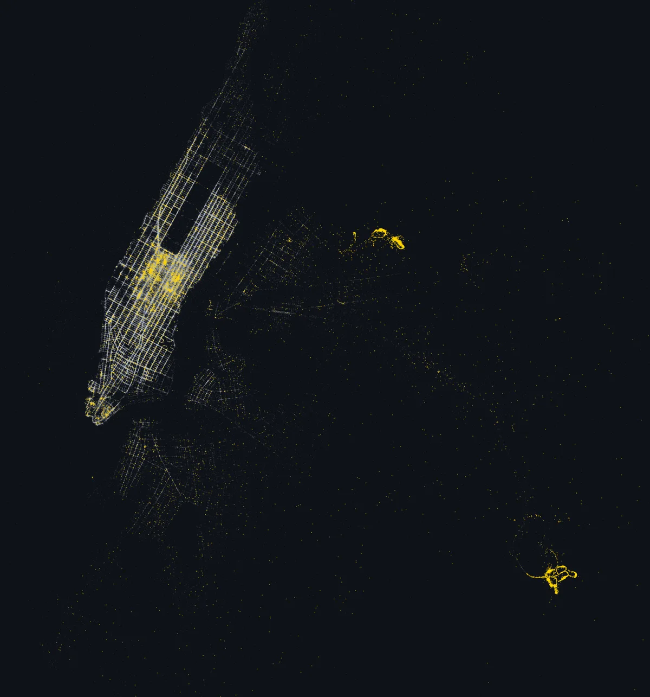
A distância calculada teve correlação de 0,90 com o preço. A melhor variável original do dataset chegava a só 0,44. No modelo final, a distância respondeu por cerca de 88% da importância.
The computed distance had a 0.90 correlation with price. The best original column in the dataset reached only 0.44. In the final model, distance accounted for about 88% of feature importance.
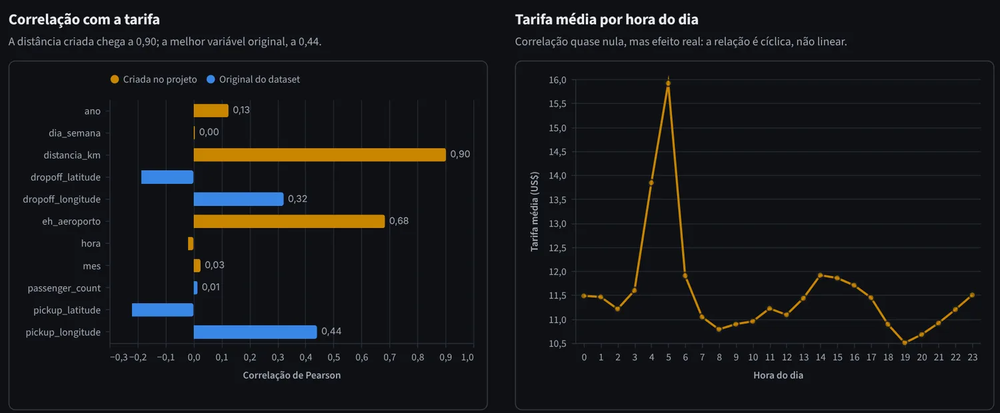
São só 5% das corridas, mas custam quase quatro vezes mais. Mesmo assim, saem mais baratas por km: o trajeto JFK–Manhattan tem tarifa fixa, e em viagens longas o valor de saída se dilui.
They are only 5% of rides but cost almost four times more. Even so, they are cheaper per km: the JFK–Manhattan route has a flat fare, and on long trips the base fee gets diluted.
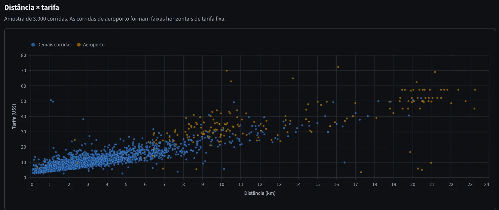
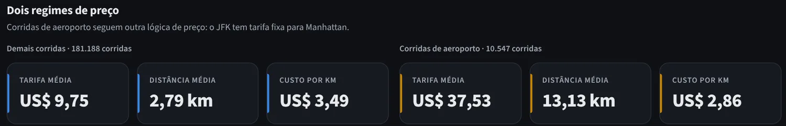
Às 5h, a proporção de corridas para o aeroporto é muito maior: é quem vai pegar voo cedo. A média sobe por causa do tipo de viagem. A correlação da hora com o preço é quase zero, porque o efeito é em "onda", e uma linha reta não capta isso.
At 5 a.m. the share of airport trips is much higher: people catching early flights. The average rises because of the kind of trip. The hour's correlation with price is close to zero because the effect is wave-shaped, which a straight line cannot capture.
ComparaçãoComparison
Regressão Linear traça uma linha reta. Random Forest combina 100 árvores de decisão e tira a média. SVR traça uma curva com uma faixa de tolerância, ignorando erros pequenos. Antes de comparar, ajustamos cada um: no SVR, o kernel RBF (que enxerga curvas) venceu o linear em todas as métricas.
Linear Regression fits a straight line. Random Forest averages 100 decision trees. SVR fits a curve with a tolerance band that ignores small errors. Before comparing, we tuned each one: for SVR, the RBF kernel (which captures curves) beat the linear kernel on every metric.
Cada algoritmo tem configurações que não aprende sozinho, os hiperparâmetros. Em vez de chutar, testamos várias combinações com validação cruzada de 5 partições no treino, sem tocar nos dados de teste. No SVR, comparamos primeiro o kernel: o linear só enxerga linha reta e ficou igual à Regressão Linear, e o RBF captou as curvas e ainda treinou 4 vezes mais rápido.
Each algorithm has settings it does not learn on its own, the hyperparameters. Instead of guessing, we tested several combinations with 5-fold cross-validation on the training set, without touching the test data. For SVR, we first compared kernels: the linear one only sees straight lines and matched Linear Regression, while RBF captured the curves and trained 4 times faster.
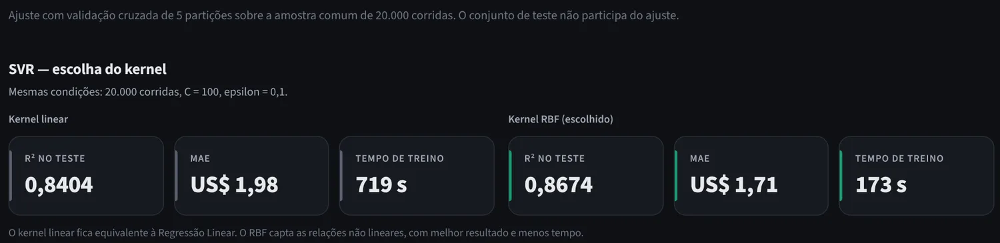
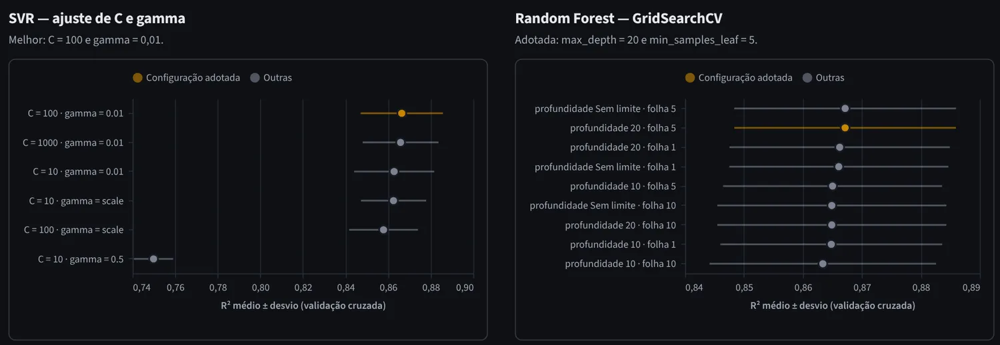
O obstáculo: o tempo de treino do SVR cresce entre o quadrado e o cubo do número de corridas, então ele não é viável com a base inteira. Por isso, a comparação principal colocou os três modelos para aprender com as mesmas 20 mil corridas e fazer a mesma prova de 38 mil. Assim, a diferença vem só do algoritmo.
The obstacle: SVR training time grows between the square and the cube of the number of rides, so it is not viable on the full dataset. That is why the main comparison had all three models learn from the same 20,000 rides and take the same 38,000-ride test. That way, any difference comes from the algorithm alone.
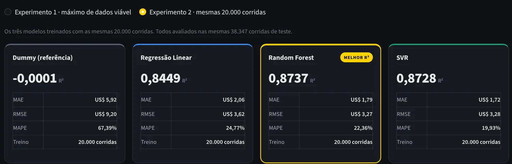
| ModeloModel | R² ↑ | MAE ↓ | RMSE ↓ | MAPE ↓ |
|---|---|---|---|---|
| Referência (média) | 0,00 | US$ 5,92 | US$ 9,20 | 67% |
| Regressão Linear | 0,845 | US$ 2,06 | US$ 3,62 | 24,8% |
| Random Forest | 0,874 | US$ 1,79 | US$ 3,27 | 22,4% |
| SVR (RBF) | 0,873 | US$ 1,72 | US$ 3,28 | 19,9% |
| Baseline (mean) | 0.00 | US$ 5.92 | US$ 9.20 | 67% |
| Linear Regression | 0.845 | US$ 2.06 | US$ 3.62 | 24.8% |
| Random Forest | 0.874 | US$ 1.79 | US$ 3.27 | 22.4% |
| SVR (RBF) | 0.873 | US$ 1.72 | US$ 3.28 | 19.9% |
↑ maior é melhor · ↓ menor é melhor. Mesmas 20 mil corridas de treino e mesmas 38 mil de teste.
↑ higher is better · ↓ lower is better. Same 20,000 training rides and same 38,000 test rides.
Deu empate técnico entre Random Forest e SVR, com diferenças de centavos. O SVR erra menos nas corridas baratas, que são a maioria, e por isso tem o menor erro médio. O Random Forest erra menos nas corridas caras, e por isso ganha no R² e no RMSE, que pesam mais os erros grandes.
Random Forest and SVR came out in a statistical tie, with differences of cents. SVR errs less on cheap rides, which are the majority, so it has the lowest average error. Random Forest errs less on expensive rides, so it wins on R² and RMSE, which weigh large errors more.
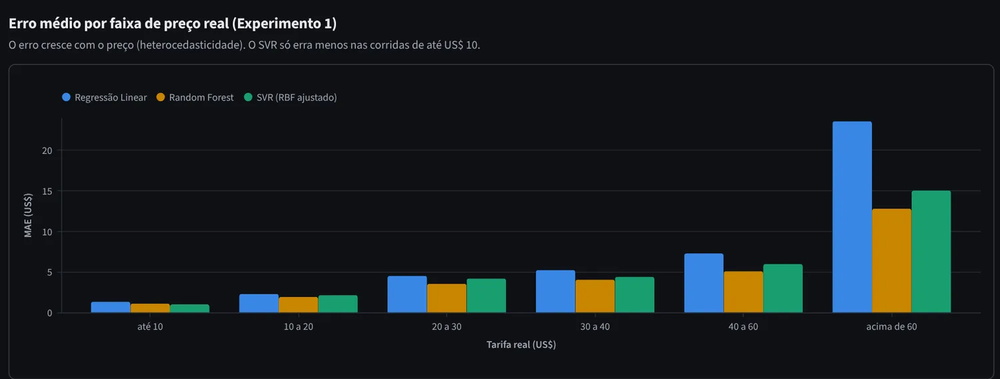
A decisãoThe decision
Com precisão equivalente, o desempate foi o custo. O SVR treina cerca de 7 vezes mais devagar e leva cerca de 240 vezes mais tempo para prever. Já o Random Forest consegue aprender com todas as corridas. Treinado com a base completa, ele chegou ao melhor resultado do projeto: R² 0,888 e erro médio de US$ 1,65 por corrida.
With equivalent accuracy, cost broke the tie. SVR trains about 7 times slower and takes about 240 times longer to predict. Random Forest, on the other hand, can learn from every ride. Trained on the full dataset, it reached the project's best result: R² 0.888 and an average error of US$ 1.65 per ride.
A validação cruzada confirmou a mesma ordem entre os modelos, e a diferença entre treino e teste do Random Forest ficou dentro do aceitável.
Cross-validation confirmed the same ranking, and Random Forest's train–test gap stayed within acceptable limits.
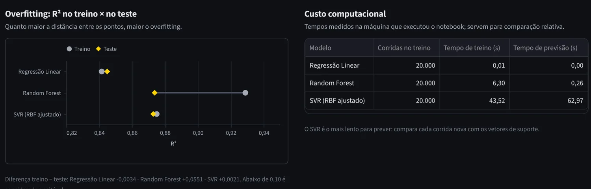
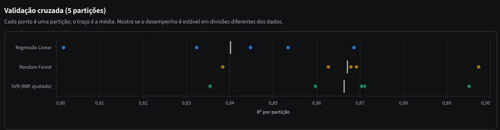
Dashboard
Construímos um dashboard em Streamlit com cinco abas: visão geral, análise exploratória, ajuste dos modelos, comparação de modelos e um simulador, onde se escolhe a origem, o destino e o horário para ver a tarifa prevista pelo modelo final.
We built a Streamlit dashboard with five tabs: overview, exploratory analysis, model tuning, model comparison and a fare simulator, where you pick origin, destination and time to see the final model's predicted fare.
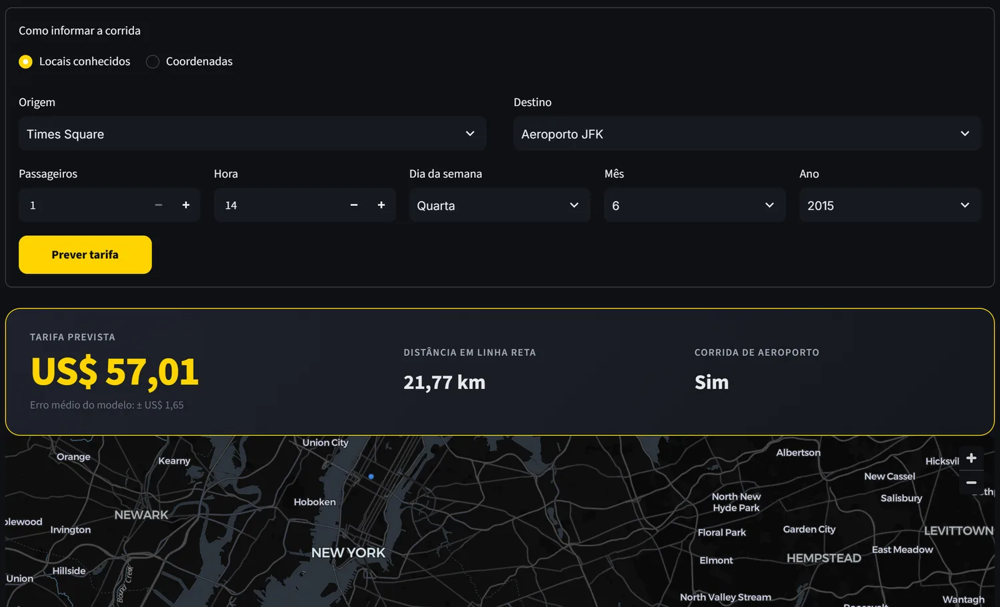
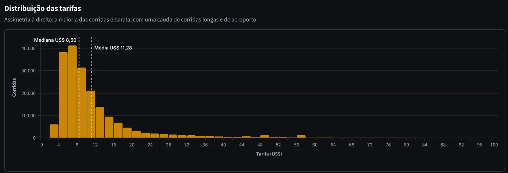
AprendizadosTakeaways
Rodando o projetoRunning the project
# 1. Clonar o repositório / Clone the repository git clone https://github.com/Matheus-bot/projeto-ml-uber.git cd projeto-ml-uber # 2. Instalar as dependências / Install dependencies pip install -r requirements.txt # 3. Abrir o dashboard / Launch the dashboard streamlit run app/dashboard.py
O notebook notebooks/projeto_uber.ipynb refaz todo o processo, da limpeza ao treino dos modelos.
The notebook notebooks/projeto_uber.ipynb reproduces the whole process, from cleaning to model training.